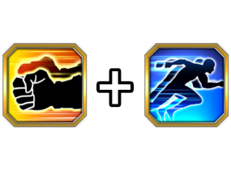
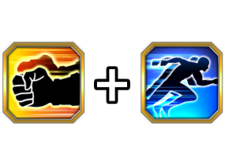

Build recomendada
DATA DE LANÇAMENTO: 28/04/2025

Build recomendada
Essa é mais uma Standby com um Revive Counter, oq significa que ele é 100% focado em dano e tem 0 defesa pra ele poder morrer
O Goku muda TODOS os orbs pra TEQ, ganha desvio garantido antes de atacar, crítico garantido, SA adicional..
E ele ganha 10% de ATK por orb pega, o que faz você pensar que ele teria um dano ridiculamente explosivo já que ele só tem dano na passiva toda, mas nah 💀
Infelizmente o Goku acaba sabotando o próprio time sacrificando HP tantas vezes e não compensando em quase nada, bem triste
O card em si tá precisando de um Kaioken x10 nos stats 💀
Nota dos Links:
09/10
Nota das Categorias:
10/10

Pré-Standby
Super Saiyan God SS Goku (Kaioken)
Você chegou ao fim dessa página!
Obrigado por ler tudo, e fica a vontade pra ver outras